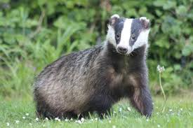

TEXUGOS, um estudo sobre eles
informações retiradas do wikipedia
Os texugos são animais de pernas curtas e atarracados, de pelagem castanha ou negra, carnívoros que pertencem à família dos mustelídeos. Existem oito espécies de texugo, divididos nestas três subfamílias: Melinae, Mellivorinae, e Taxideinae

encontrado no Parque Biologico de Gaia